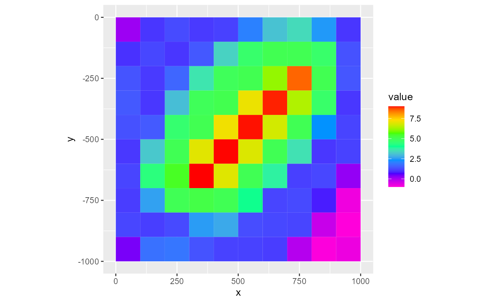
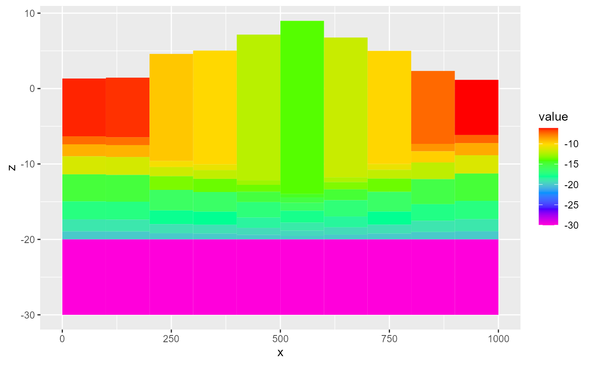
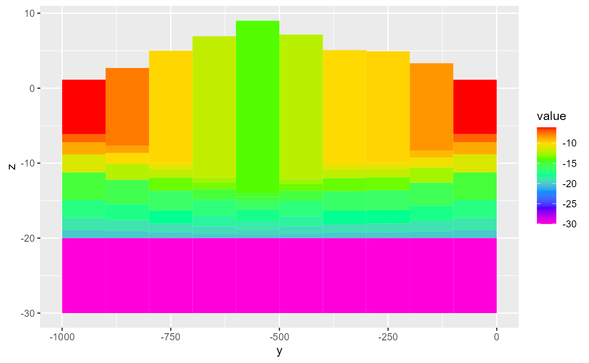

Example files
RMODFLOW currently comes with several example MODFLOW models. The models can be listed with:
##
! {RMODFLOW} is still in its experimental lifecycle stage.
##
! Use at your own risk, and submit issues here:
##
! <https://github.com/rogiersbart/RMODFLOW/issues>## [1] "example-model" "rocky-mountain-arsenal" "water-supply-problem"These are all derived from the ModelMuse examples Example Model, Rocky Mountain Arsenal and Water Supply Problem. For a list of all example files, use:
## [1] "example-model.bas" "example-model.cbc"
## [3] "example-model.chd" "example-model.dis"
## [5] "example-model.fdn" "example-model.fhd"
## [7] "example-model.gpt" "example-model.gsf"
## [9] "example-model.lpf" "example-model.lst"
## [11] "example-model.md" "example-model.mlt"
## [13] "example-model.nam" "example-model.oc"
## [15] "example-model.pcg" "example-model.pval"
## [17] "example-model.Rmd" "example-model.wel"
## [19] "example-model.zon" "rocky-mountain-arsenal.bas"
## [21] "rocky-mountain-arsenal.cbc" "rocky-mountain-arsenal.chd"
## [23] "rocky-mountain-arsenal.dis" "rocky-mountain-arsenal.fdn"
## [25] "rocky-mountain-arsenal.fhd" "rocky-mountain-arsenal.ftl"
## [27] "rocky-mountain-arsenal.gpt" "rocky-mountain-arsenal.gsf"
## [29] "rocky-mountain-arsenal.lmt" "rocky-mountain-arsenal.lpf"
## [31] "rocky-mountain-arsenal.lst" "rocky-mountain-arsenal.md"
## [33] "rocky-mountain-arsenal.nam" "rocky-mountain-arsenal.oc"
## [35] "rocky-mountain-arsenal.pcg" "rocky-mountain-arsenal.Rmd"
## [37] "rocky-mountain-arsenal.wel" "water-supply-problem.bas"
## [39] "water-supply-problem.cbc" "water-supply-problem.dis"
## [41] "water-supply-problem.fdn" "water-supply-problem.fhd"
## [43] "water-supply-problem.gpt" "water-supply-problem.gsf"
## [45] "water-supply-problem.hob_out" "water-supply-problem.lpf"
## [47] "water-supply-problem.lst" "water-supply-problem.md"
## [49] "water-supply-problem.nam" "water-supply-problem.ob_hob"
## [51] "water-supply-problem.oc" "water-supply-problem.pcg"
## [53] "water-supply-problem.riv" "water-supply-problem.Rmd"
## [55] "water-supply-problem.wel"The corresponding full file paths can be accessed through rmf_example_file() as follows:
rmf_example_file("example-model.dis")## [1] "C:/Users/brogiers/Documents/R/win-library/4.1/RMODFLOW/extdata/example-model.dis"For all files from a single model, use:
rmf_example_model("example-model")## [1] "C:/Users/brogiers/Documents/R/win-library/4.1/RMODFLOW/extdata/example-model.bas"
## [2] "C:/Users/brogiers/Documents/R/win-library/4.1/RMODFLOW/extdata/example-model.cbc"
## [3] "C:/Users/brogiers/Documents/R/win-library/4.1/RMODFLOW/extdata/example-model.chd"
## [4] "C:/Users/brogiers/Documents/R/win-library/4.1/RMODFLOW/extdata/example-model.dis"
## [5] "C:/Users/brogiers/Documents/R/win-library/4.1/RMODFLOW/extdata/example-model.fdn"
## [6] "C:/Users/brogiers/Documents/R/win-library/4.1/RMODFLOW/extdata/example-model.fhd"
## [7] "C:/Users/brogiers/Documents/R/win-library/4.1/RMODFLOW/extdata/example-model.gpt"
## [8] "C:/Users/brogiers/Documents/R/win-library/4.1/RMODFLOW/extdata/example-model.gsf"
## [9] "C:/Users/brogiers/Documents/R/win-library/4.1/RMODFLOW/extdata/example-model.lpf"
## [10] "C:/Users/brogiers/Documents/R/win-library/4.1/RMODFLOW/extdata/example-model.lst"
## [11] "C:/Users/brogiers/Documents/R/win-library/4.1/RMODFLOW/extdata/example-model.md"
## [12] "C:/Users/brogiers/Documents/R/win-library/4.1/RMODFLOW/extdata/example-model.mlt"
## [13] "C:/Users/brogiers/Documents/R/win-library/4.1/RMODFLOW/extdata/example-model.nam"
## [14] "C:/Users/brogiers/Documents/R/win-library/4.1/RMODFLOW/extdata/example-model.oc"
## [15] "C:/Users/brogiers/Documents/R/win-library/4.1/RMODFLOW/extdata/example-model.pcg"
## [16] "C:/Users/brogiers/Documents/R/win-library/4.1/RMODFLOW/extdata/example-model.pval"
## [17] "C:/Users/brogiers/Documents/R/win-library/4.1/RMODFLOW/extdata/example-model.Rmd"
## [18] "C:/Users/brogiers/Documents/R/win-library/4.1/RMODFLOW/extdata/example-model.wel"
## [19] "C:/Users/brogiers/Documents/R/win-library/4.1/RMODFLOW/extdata/example-model.zon"I/O
All functions for reading MODFLOW files into R have a prefix rmf_read_, after which in most cases the most common file extension follows. You can for instance read in the discretization file example-model.dis using:
dis <- rmf_read_dis(rmf_example_file("example-model.dis"))
class(dis)## [1] "dis" "rmf_package"For several MODFLOW file types, the functions need more than just the filename to be able to process the file. For reading in the basic package file, you for instance have to specify a dis object as an additional argument:
bas <- rmf_read_bas(rmf_example_file("example-model.bas"), dis = dis)
class(bas)## [1] "bas" "rmf_package"For the heads outputted by the model, you also need to specify a bas object:
hed <- rmf_read_fhd(rmf_example_file("example-model.fhd"), dis = dis, bas = bas)
class(hed)## [1] "hed" "rmf_4d_array"To inspect the contents of these objects, which are often just lists, using str() is often useful:
str(dis)## List of 16
## $ nlay : num 9
## $ nrow : num 10
## $ ncol : num 10
## $ nper : num 1
## $ itmuni: num 1
## $ lenuni: num 2
## $ laycbd: num [1:9] 0 0 0 0 0 0 0 0 0
## $ delr : num [1:10] 100 100 100 100 100 100 100 100 100 100
## $ delc : num [1:10] 100 100 100 100 100 100 100 100 100 100
## $ top : 'rmf_2d_array' num [1:10, 1:10] 0.105 0.952 1.363 1.445 1.331 ...
## ..- attr(*, "dimlabels")= chr [1:2] "i" "j"
## $ botm : 'rmf_3d_array' num [1:10, 1:10, 1:9] -5.11 -5.95 -6.36 -6.45 -6.33 ...
## ..- attr(*, "dimlabels")= chr [1:3] "i" "j" "k"
## $ perlen: num 1
## $ nstp : num 1
## $ tsmult: num 1
## $ sstr : chr "SS"
## $ prj :List of 3
## ..$ origin : Named num [1:3] 0 -1000 0
## .. ..- attr(*, "names")= chr [1:3] "x" "y" "z"
## ..$ rotation: num 0
## ..$ crs :List of 2
## .. ..$ input: chr NA
## .. ..$ wkt : chr NA
## .. ..- attr(*, "class")= chr "crs"
## ..- attr(*, "class")= chr "prj"
## - attr(*, "comment")= chr [1:6] " Discretization File created on 2017-05-30 by ModelMuse version 3.9.0.0." " Upper left corner: (0, 0)" " Lower left corner: (0, -1000)" " Upper right corner: (1000, 0)" ...
## - attr(*, "class")= chr [1:2] "dis" "rmf_package"
str(bas)## List of 10
## $ xsection : logi FALSE
## $ chtoch : logi TRUE
## $ free : logi TRUE
## $ printtime : logi TRUE
## $ showprogress: logi FALSE
## $ stoperror : logi FALSE
## $ stoper : num NA
## $ ibound : 'rmf_3d_array' int [1:10, 1:10, 1:9] 1 1 1 1 1 1 1 1 1 1 ...
## ..- attr(*, "dimlabels")= chr [1:3] "i" "j" "k"
## $ hnoflo : num -1e+20
## $ strt : 'rmf_3d_array' num [1:10, 1:10, 1:9] 30 30 30 30 30 30 30 30 30 30 ...
## ..- attr(*, "dimlabels")= chr [1:3] "i" "j" "k"
## - attr(*, "comment")= chr " Basic Package file created on 2017-05-30 by ModelMuse version 3.9.0.0."
## - attr(*, "class")= chr [1:2] "bas" "rmf_package"
str(hed)## 'hed' num [1:10, 1:10, 1:9, 1] 30 29.9 29.9 29.9 29.9 ...
## - attr(*, "nstp")= num 1
## - attr(*, "totim")= num 1
## - attr(*, "pertim")= num 1
## - attr(*, "kper")= num 1
## - attr(*, "kstp")= num 1
## - attr(*, "dimlabels")= chr [1:4] "i" "j" "k" "l"All the elements in these lists are named following the MODFLOW variable names, as described in the online guide to MODFLOW, but we use lowercase throughout the package (except for the package title).
Similar to the reading functions, all writing functions start with a prefix rmf_write_, so you can try these as well. At this point, it might be useful to copy some of the example files to your working directory, and play around with them. You can use the following approach to do so:
rmf_copy_to_wd(rmf_example_model("example-model"))Visualization
Many ways of visualizing 2D, 3D and 4D arrays are available. Check out the help pages ?rmf_plot.rmf_2d_array, ?rmf_plot.rmf_3d_array and ?rmf_plot.rmf_4d_array to find out more. Here’s a basic visualization of a 2D array:
rmf_plot(dis$top, dis = dis)
df <- rmf_as_tibble(dis$top, dis = dis)
library(ggplot2)
ggplot(df, aes(x, y, fill = value, group = id)) +
geom_polygon() +
scale_fill_gradientn(colours = rev(rainbow(7))) +
coord_equal()
3D array:
rmf_plot(dis$botm, dis = dis, k = 1)
rmf_plot(dis$botm, dis = dis, i = 5)
rmf_plot(dis$botm, dis = dis, j = 5)
df <- dis$botm %>%
rmf_as_tibble(dis = dis, k = 1)
ggplot(df, aes(x, y, fill = value, group = id)) +
geom_polygon() +
scale_fill_gradientn(colours = rev(rainbow(7))) +
coord_equal()And here you have a basic map view and two vertical cross-sections for a 4D array:
rmf_plot(hed, dis = dis, k = 1, l = 1)
rmf_plot(hed, dis = dis, i = 5, l = 1)
rmf_plot(hed, dis = dis, j = 5)
df <- rmf_as_tibble(hed, dis = dis, k = 1, l = 1)
ggplot(df, aes(x, y, fill = value, group = id)) +
geom_polygon() +
scale_fill_gradientn(colours = rev(rainbow(7))) +
coord_equal()Test sf
The pipe operator
The magrittr pipe is also imported in the package, so at the moment you can do things like:
rmf_example_file("example-model.dis") %>%
rmf_read_dis() %>%
rmf_plot(.$top, dis = .)
The goal is however to develop a model manipulation language in future which would allow straightforward use of the pipe, as well as several tidyverse tools, so stay tuned!